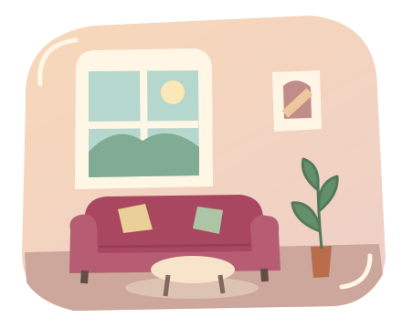

Zu Besuch kommen
Im Kalender siehst du die freigegebenen Besuchszeiten. Frage einen passenden Zeitraum an und warte auf die Bestätigung.
Besuchszeiten ansehen →Ein Zuhause. Viele Begegnungen.
Vorbeikommen, Zeit miteinander verbringen oder ein eigenes Event auf die Beine stellen. Hier findest du den passenden Moment dafür.

Dein Weg nach ThreeDen
Im Kalender siehst du die freigegebenen Besuchszeiten. Frage einen passenden Zeitraum an und warte auf die Bestätigung.
Besuchszeiten ansehen →Was in ThreeDen stattfindet, erscheint hier im Kalender. Öffentlich freigegebene Veranstaltungen können auch im Travelkiez und bei den Rubybubys sichtbar sein.
Veranstaltungen ansehen →Ein freies Event-Zeitfenster ist der Anfang. Beschreibe bei deiner Anfrage, was du vorhast; gemeinsam klärt ihr die Einzelheiten.
Event-Zeitfenster anfragen →Ein Zuhause bleibt ein Zuhause
Eine feste Zusage entsteht mit der Bestätigung. Adresse, Zugang und persönliche Absprachen gehören in den privaten Austausch. Im öffentlichen Kalender stehen nur bewusst freigegebene Angaben.